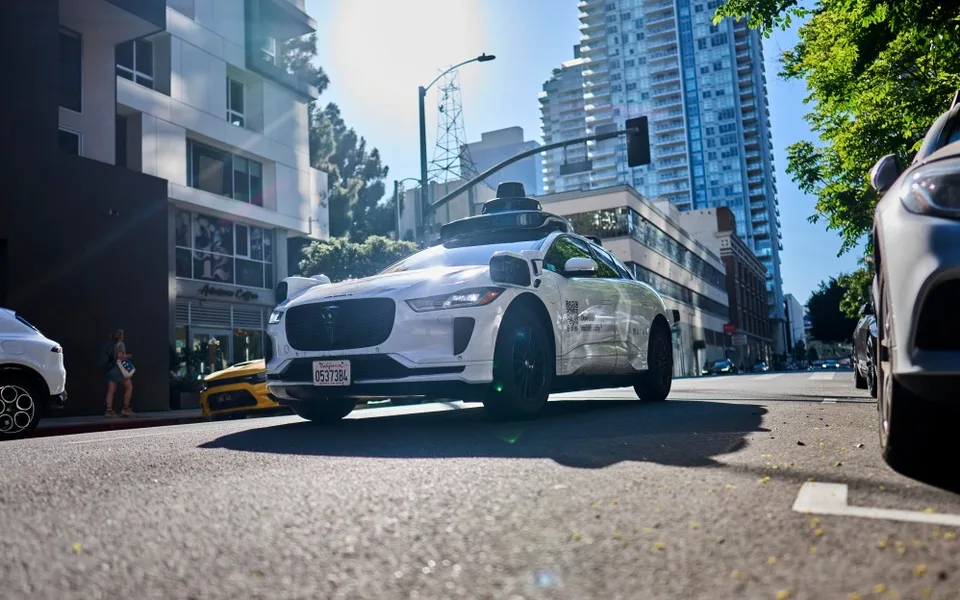

ARTICLE 01
웨이모, 총기 소지 탑승객 적발해 경찰에 신고
로보택시가 승객 신고한 사건.

SUMMARY
- 샌프란시스코에서 웨이모 로보택시가 이용약관 위반, 즉 총기 소지를 감지하고 차를 세운 뒤 경찰에 신고해 청소년 두 명이 체포됐어요.
- 탑승자들은 장전된 AR형 고스트건을 소지하고 있었고, 소년원으로 이송됐으며 웨이모는 이후 LA타임스에 자사 차량이었음을 확인했어요.
- 이전에도 술을 마시고 장난감 총을 쏘던 청소년 탑승자에게 웨이모가 기계 고장을 가장해 차를 세운 사례가 있어, 차량이 승객 행동을 감지·개입함을 보여줘요.
LINK